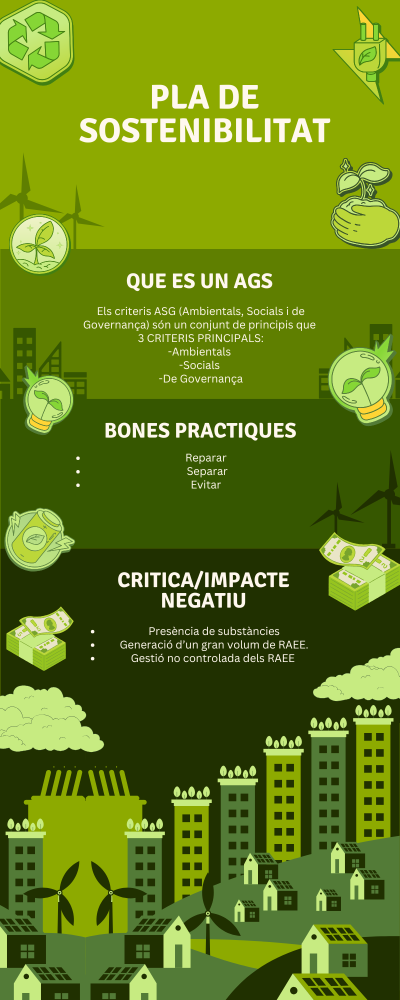
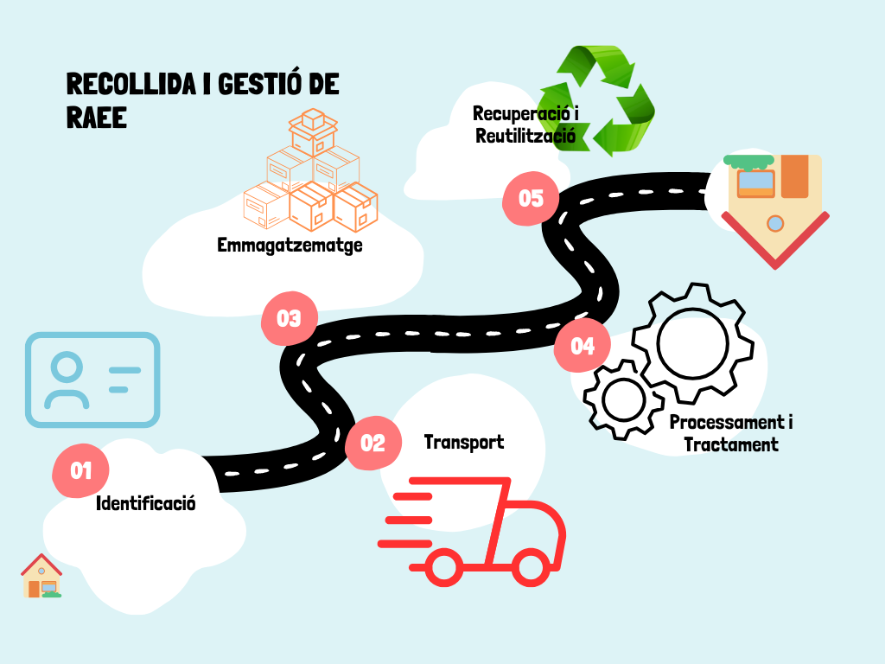
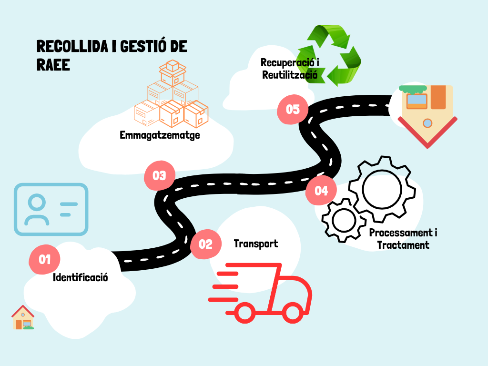

INFOGRAFIES
Pla de sostenibilitad basat en els ASG
Sector Informàtic
Tractament de residus
Es important tenir en compte la classificació i la gestió de residus per facilitzar la seva recuperació i reutilització
Pla de sostenibilitad basat en els ASG
Es important tenir en compte la classificació i la gestió de residus per facilitzar la seva recuperació i reutilització
